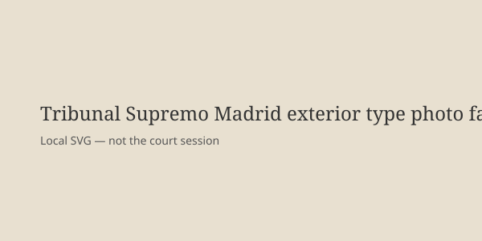

Madrid · Electoral · 12-13 de octubre de 2026
El Supremo mantiene la suspensión de efectos electorales para 163.020 nacionalizados por la ley de nietos.

Lo que coinciden las redacciones
El 12 de octubre de 2026 la Sección Cuarta de la Sala de lo Contencioso-Administrativo del Tribunal Supremo desestimó el recurso de reposición de la Abogacía del Estado (apoyado por la Fiscalía) contra el auto de septiembre que suspendió cautelarmente los efectos electorales de las inscripciones en el Censo de Españoles Residentes Ausentes (CERA) de personas nacionalizadas al amparo de la disposición adicional octava de la Ley 20/2022 de Memoria Democrática, conocida como “ley de nietos”. La cifra afectada es 163.020 personas según datos aportados al tribunal. El censo válido para las elecciones del 29 de noviembre es el cerrado el 1 de agosto. Solo quienes obtengan de los registros consulares, bajo responsabilidad del encargado, una certificación de que a 1 de agosto cumplían los requisitos de exilio de sus antepasados (político, ideológico, de creencia u orientación sexual) conservan el derecho de voto. Hubo un voto particular de la magistrada Alicia Millán.
Los recurrentes originales fueron Iustitia Europa y Vox. El Supremo reiteró que el interés general de preservar la pureza del proceso electoral prevalece sobre el derecho de sufragio en estas circunstancias, y que no cabe alegar imposibilidad material cuando la causa reside en la Administración.
Lo que es solo una cita
Comentarios del Ejecutivo que califican la resolución de “grave” o de la oposición que la respaldan son posicionamientos políticos. No alteran el tenor del auto. El voto particular de Millán argumenta que el adelanto electoral cambia el marco; es una opinión disidente, no la ratio decidendi de la mayoría.
Mecanismo e historia que el lector necesita
La Ley de Memoria Democrática de 2022 abrió una vía de nacionalidad para hijos y nietos de españoles de origen que hubieran sufrido exilio. Una instrucción del Ministerio de Justicia amplió el alcance. El Supremo, en septiembre, dictó medidas cautelares a petición de dos recurrentes porque consideró que no estaba acreditado el cumplimiento de los requisitos de exilio en un número elevado de expedientes. El adelanto electoral al 29 de noviembre (convocado el 5 de octubre) cerró el censo el 1 de agosto, lo que hace materialmente difícil depurar 163.000 casos antes de la votación. El tribunal mantuvo la suspensión precisamente porque el tiempo no alcanza y la responsabilidad de la trazabilidad corresponde a la Administración.
El CERA es el censo de españoles residentes en el extranjero. El derecho de sufragio activo es fundamental, pero el Supremo lo pondera frente a la integridad del censo. La puerta que queda abierta —certificación consular de exilio— es estrecha y depende de que el interesado y el consulado documenten el supuesto legal original, no la instrucción ministerial posterior. Cinco días hábiles para personarse como codemandado es el plazo procesal residual.
Para un lector no español: España ha tenido varias leyes de memoria y de nacionalidad por descendencia. Cada una genera expedientes masivos en consulados. Cuando un tribunal suspende efectos electorales de un bloque de nacionalizados, el efecto práctico es que esas personas no aparecen en el censo de las próximas elecciones salvo que demuestren el supuesto estricto de exilio. Eso es lo que ocurrió el 12 de octubre.
Lo que esta historia no es
No es una declaración de que los nacionalizados no son españoles. No es una estimación final de cuántos votarán (depende de las certificaciones). No es una fotografía de la sala de deliberaciones. La imagen es una vista aérea de tipo del edificio.

Artículos fuente y puntuaciones
Imagen: Wikimedia Commons vista aérea del Tribunal Supremo vía Special:FilePath. Caption indica que no es la deliberación. onerror al SVG local.